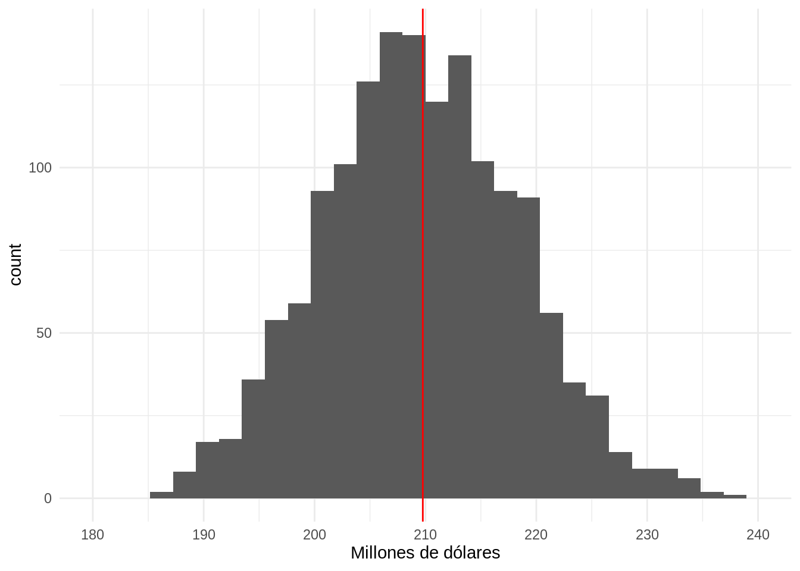
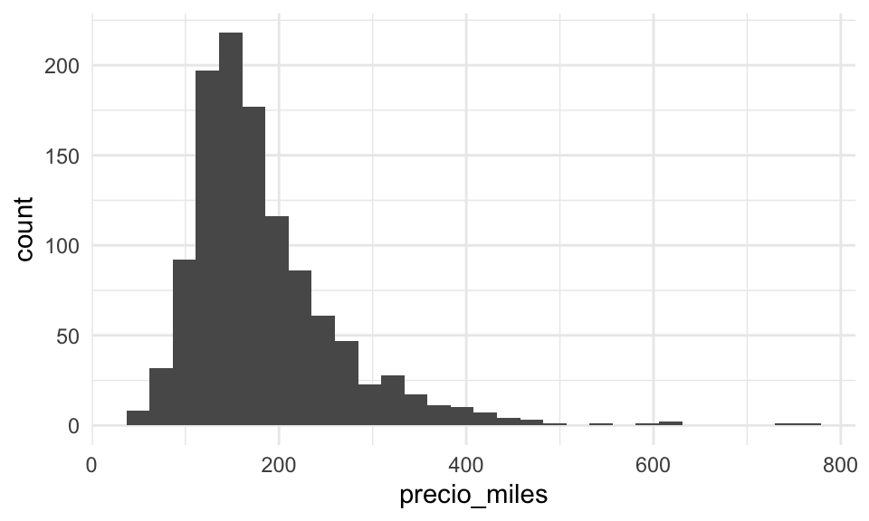
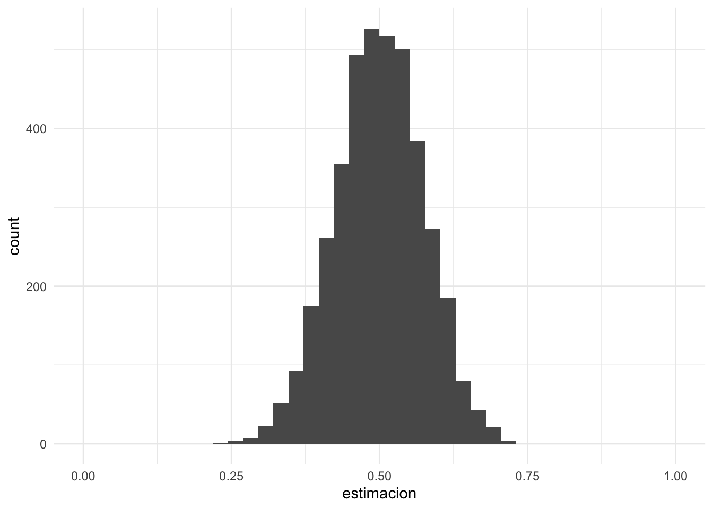
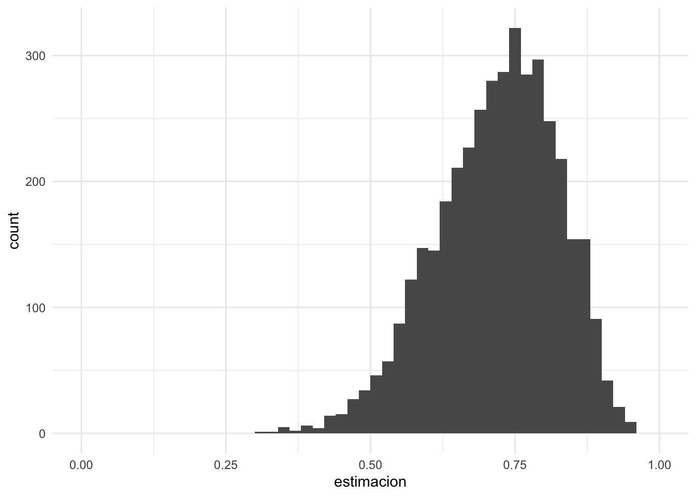
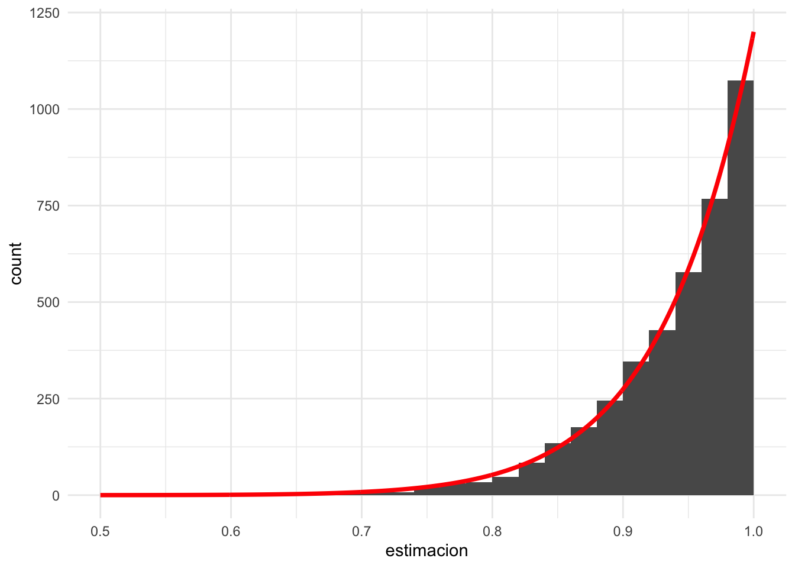
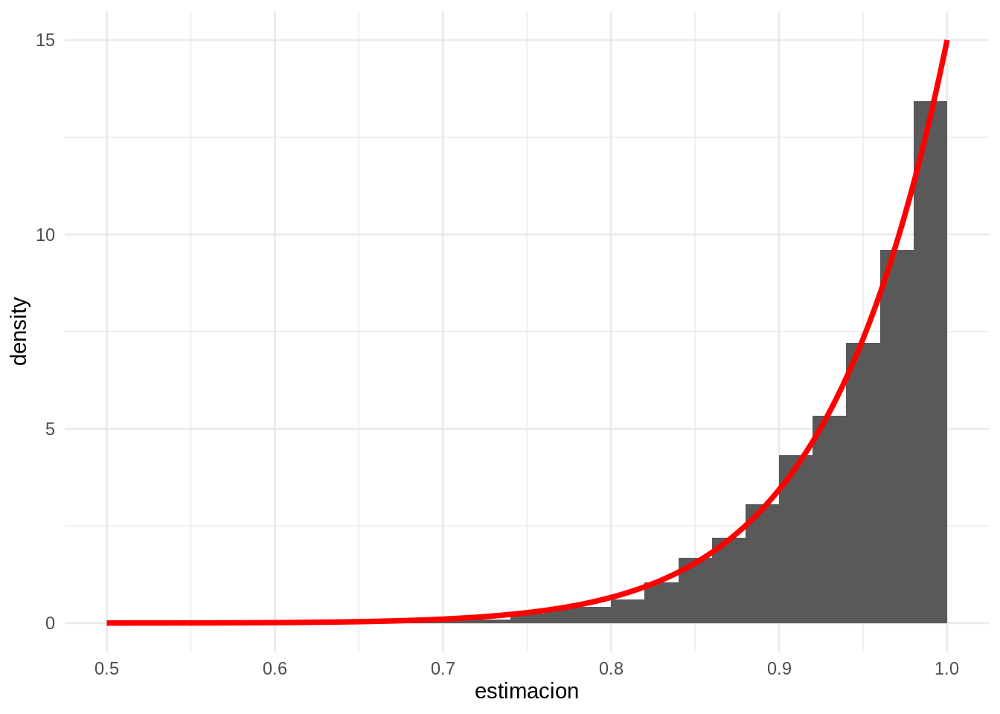
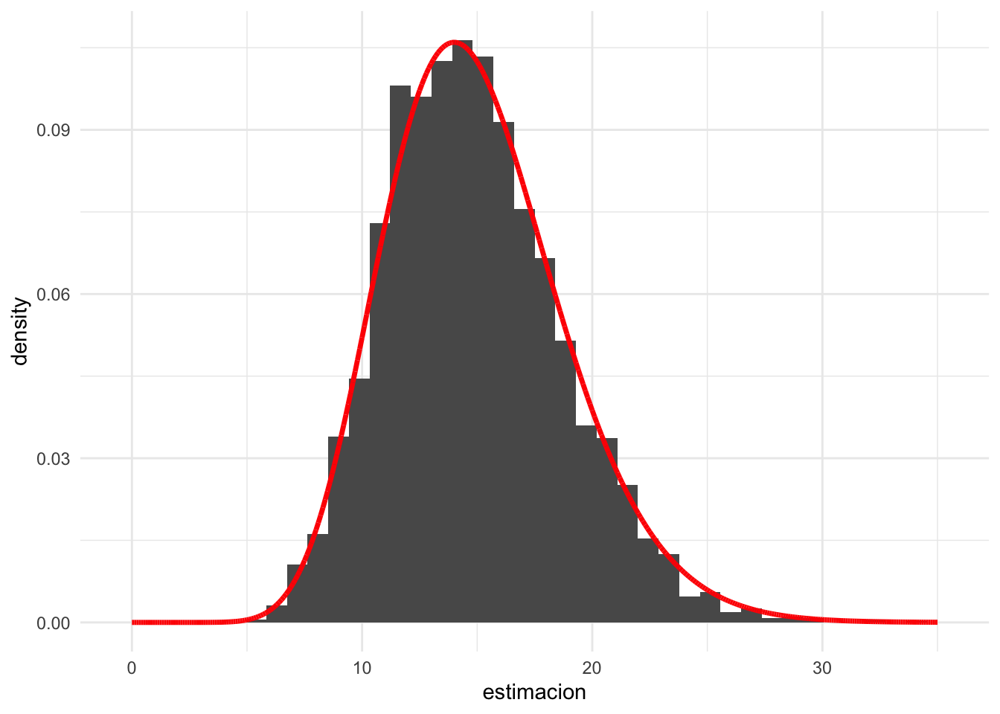

Sección 5 Estimación y distribución de muestreo
En esta sección discutiremos cuál el objetivo general del proceso de estimación. y cómo entender y manejar la variabilidad que se produce cuando aleatorizamos la selección de las muestras que utilizamos para hacer análisis.
Ejemplo: precios de casas
Supongamos que queremos conocer el valor total de las casas que se vendieron recientemente en una zona particular. Supondremos que tenemos un listado de las casas que se han vendido recientemente, pero en ese listado no se encuentra el precio de venta. Decidimos entonces tomar una muestra aleatoria de 100 de esas casas. Para esas casas hacemos trabajo de campo para averiguar el precio de venta.
marco_casas <- read_csv("data/casas.csv")
set.seed(841)
muestra_casas <- sample_n(marco_casas, 100) %>%
select(id, nombre_zona, area_habitable_sup_m2, precio_miles)
sprintf("Hay %0.0f casas en total, tomamos muestra de %0.0f",
nrow(marco_casas), nrow(muestra_casas))## [1] "Hay 1144 casas en total, tomamos muestra de 100"## [90m# A tibble: 6 x 4[39m
## id nombre_zona area_habitable_sup_m2 precio_miles
## [3m[90m<dbl>[39m[23m [3m[90m<chr>[39m[23m [3m[90m<dbl>[39m[23m [3m[90m<dbl>[39m[23m
## [90m1[39m 287 NAmes 161. 159
## [90m2[39m 755 NAmes 95.3 156
## [90m3[39m [4m1[24m190 Gilbert 168. 189
## [90m4[39m 36 NridgHt 228. 309
## [90m5[39m 32 Sawyer 114. 149.
## [90m6[39m 538 NAmes 80.3 111.Como tomamos una muestra aleatoria, intentamos estimar el valor total de las casas que se vendieron expandiendo el total muestral, es decir nuestro estimador \(\hat{t} = t(X_1,\ldots X_{100})\) del total poblacional \(t\) es
\[\hat{t} = \frac{N}{n} \sum_{i=1}^{100} X_i = N\bar{x}\] Esta función implementa el estimador:
n <- nrow(muestra_casas) # tamaño muestra
N <- nrow(marco_casas) # tamaño población
estimar_total <- function(muestra_casas, N){
total_muestral <- sum(muestra_casas$precio_miles)
n <- nrow(muestra_casas)
# cada unidad de la muestra representa a N/n
f_exp <- N / n
# estimador total es la expansión del total muestral
estimador_total <- f_exp * total_muestral
res <- tibble(total_muestra = total_muestral,
factor_exp = f_exp,
est_total_millones = estimador_total / 1000)
res
}
estimar_total(muestra_casas, N) %>%
mutate(across(where(is.numeric), round, 2))## [90m# A tibble: 1 x 3[39m
## total_muestra factor_exp est_total_millones
## [3m[90m<dbl>[39m[23m [3m[90m<dbl>[39m[23m [3m[90m<dbl>[39m[23m
## [90m1[39m [4m1[24m[4m8[24m444. 11.4 211Sin embargo, si hubiéramos obtenido otra muestra, hubiéramos obtenido otra estimación diferente. Por ejemplo:
## [90m# A tibble: 1 x 3[39m
## total_muestra factor_exp est_total_millones
## [3m[90m<dbl>[39m[23m [3m[90m<dbl>[39m[23m [3m[90m<dbl>[39m[23m
## [90m1[39m [4m1[24m[4m7[24m916. 11.4 205.El valor poblacional que buscamos estimar (nótese que en la práctica este no lo conocemos) es:
# multiplicar por 1000 para que sea en millones de dólares
total_pob <- sum(marco_casas %>% pull(precio_miles)) / 1000
total_pob## [1] 209.7633Así que:
- Para algunas muestras esta estadística puede estar muy cercana al valor poblacional, pero para otras puede estar más lejana.
- Para entender qué tan buena es una estimación particular, entonces, tenemos que entender cuánta variabilidad hay de muestra a muestra debida a la aleatorización. Esto depende del diseño de la muestra y de la población de precios de casas (que no conocemos).
Distribución de muestreo
La distribución de muestreo de una estadística enumera los posibles resultados que puede tomar esa estadística sobre todas las muestras posibles. Este es el concepto básico para poder entender qué tan bien o mal estima un parámetro poblacional dado.
En nuestro ejemplo anterior de precio de casas, no podemos calcular todas las posibles estimaciones bajo todas las posibles muestras, pero podemos aproximar repitiendo una gran cantidad de veces el proceso de muestreo, como hicimos al aproximar la distribución de permutaciones de estadísticas de prueba de las secciones anteriores.
Empezamos repitiendo 10 veces y examinamos cómo varía nuestra estadística:
replicar_muestreo <- function(marco_casas, m = 500, n){
# n es el tamaño de muestra que se saca de marco_casas
# m es el número de veces que repetimos el muestro de tamaño n
resultados <- map(1:m,
function(id) {
sample_n(marco_casas, n) %>%
estimar_total(N) %>%
mutate(id_muestra = id) %>%
select(id_muestra, everything())
})
resultados %>% bind_rows
}
replicar_muestreo(marco_casas, m = 10, n = 100) %>%
mutate(across(where(is.numeric), round, 1)) %>%
formatear_tabla()| id_muestra | total_muestra | factor_exp | est_total_millones |
|---|---|---|---|
| 1 | 17594.8 | 11.4 | 201.3 |
| 2 | 17423.9 | 11.4 | 199.3 |
| 3 | 18444.3 | 11.4 | 211.0 |
| 4 | 17696.6 | 11.4 | 202.4 |
| 5 | 17275.8 | 11.4 | 197.6 |
| 6 | 17867.6 | 11.4 | 204.4 |
| 7 | 18450.8 | 11.4 | 211.1 |
| 8 | 18187.2 | 11.4 | 208.1 |
| 9 | 18604.2 | 11.4 | 212.8 |
| 10 | 19144.4 | 11.4 | 219.0 |
Como vemos, hay variación considerable en nuestro estimador del total, pero la estimación que haríamos con cualquiera de estas muestras no es muy mala. Ahora examinamos un número más grande de simulaciones:
Y el siguiente histograma nos dice qué podemos esperar de la variación de nuestras estimadores, y donde es más probable que una estimación particular caiga:
graf_1 <- ggplot(replicaciones_1, aes(x = est_total_millones)) +
geom_histogram() +
geom_vline(xintercept = total_pob, colour = "red") +
xlab("Millones de dólares") +
scale_x_continuous(breaks = seq(180, 240, 10), limits = c(180, 240))
graf_1 Con muy alta probabilidad el error no será de más de unos 30 millones de dólares (o no más de 20% del valor poblacional).
Definición Sea \(X_1, X_2, \ldots X_n\) una muestra, y \(T = t(X_1, X_2, \ldots, X_n)\) una estadística.
La distribución de muestreo de \(T\) es la función de distribución de \(T\). Esta distribución es sobre todas las posibles muestras que se pueden obtener.
Cuando usamos \(T\) para estimar algún parámetro poblacional \(\theta\), decimos informalmente que el estimador es preciso si su distribución de muestreo está muy concentrada alrededor del valor \(\theta\) que queremos estimar.
Si la distribución de muestreo está concentrada en un conjunto muy grande o muy disperso, quiere decir que con alta probabilidad cuando obtengamos nuestra muestra y calculemos nuestra estimación, el resultado estará lejano del valor poblacional que nos interesa estimar.
Veamos qué pasa cuando hacemos la muestra más grande en nuestro ejemplo:
Graficamos las dos distribuciones de muestreo juntas, y vemos cómo con mayor muestra obtenemos un estimador más preciso, y sin considerar el costo, preferimos el estimador mejor concentrado alrededor del valor que buscamos estimar.
library(patchwork)
graf_2 <- ggplot(replicaciones_2, aes(x = est_total_millones)) +
geom_histogram() +
geom_vline(xintercept = total_pob, colour = "red") +
xlab("Millones de dólares") +
scale_x_continuous(breaks = seq(180, 240, 10), limits = c(180, 240))
graf_1 + graf_2
Observación: a veces este concepto se confunde la distribución poblacional de las \(X_i\). Esto es muy diferente. Por ejemplo, en nuestro caso, el histograma de la distribución de valores poblacionales es
 que en general no tiene ver mucho en escala o forma con la distribución de muestreo de nuestro estimador del total.
Más ejemplos
Podemos también considerar muestrear de poblaciones sintéticas o modelos probabilísticos que usamos para modelar poblaciones reales.
Por ejemplo, supongamos que tomamos una muestra de tamaño 15 de la distribución uniforme en \([0,1]\). Es decir, cada \(X_i\) es un valor uniformemente distribuido en \([0,1]\), y las \(X_i\) se extraen independientemente unas de otras. Consideramos dos estadísticas de interés:
- La media muestral \(T_1(X) = \frac{1}{n}\sum_{i = 1}{15} X_i\)
- El cuantil 0.75 de la muestra \(T_2(X) = q_{0.75}(X)\)
Para el primer caso hacemos:
# simular
replicar_muestreo_unif <- function(est = estimador_1, m, n = 15){
valores_est <- map_dbl(1:m, ~ est(runif(n)))
tibble(id_muestra = 1:m, estimacion = valores_est)
}
sim_estimador_1 <- replicar_muestreo_unif(mean, 4000, 15)
# graficar aprox de distribución de muestreo
ggplot(sim_estimador_1, aes(x = estimacion)) +
geom_histogram(bins = 40) +
xlim(c(0, 1))
# simular para el máximo
cuantil_75 <- function(x) quantile(x, 0.75)
sim_estimador_2 <- replicar_muestreo_unif(cuantil_75, 4000, 15)
# graficar distribución de muestreo
ggplot(sim_estimador_2, aes(x = estimacion)) +
geom_histogram(breaks = seq(0, 1, 0.02)) +
xlim(c(0, 1))
Supón que tenemos una muestra de 30 observaciones de una distribución uniforme \([0,b]\).
- ¿Qué tan buen estimador de \(b/2\) es la media muestral? ¿Cómo lo cuantificarías?
- ¿Qué tan buen estimador del cuantil 0.8 de la distribución uniforme es el cuantil 0.8 muestral? ¿Qué desventajas notas en este estimador?
El error estándar
Una primera medida útil de la dispersión de la distribución de muestreo es su desviación estándar: la razón específica tiene qué ver con un resultado importante, el teorema central del límite, que veremos más adelante. En este caso particular, a esta desviación estándar se le llama error estándar:
Definición A la desviación estándar de una estadística \(T\) le llamamos su error estándar, y la denotamos por \(\text{ee}(T)\). A cualquier estimador de este error estándar lo denotamos como \(\hat{\text{ee}}(T)\).
Este error estándar mide qué tanto varía el estimador \(T\) de muestra a muestra.
Observación: es importante no confundir el error estándar con la desviación estándar de una muestra (o de la población).
En nuestro ejemplo de las uniformes, la desviación estándar de las muestras varía como:
## 0% 25% 50% 75% 100%
## 0.11 0.26 0.29 0.31 0.41Mientras que el error estándar de la media es aproximadamente
## [1] 0.07439575y el error estándar del máximo es aproximadamente
## [1] 0.05928675Ejemplo: valor de casas
Consideramos el error estándar del estimador del total del inventario vendido, usando una muestra de 250 con el estimador del total que consideramos. Como aproximamos con simulación la distribución de muestreo, podemos hacer:
## [1] 5.2que está en millones de pesos y cuantifica la dispersión de la distribución de muestreo del estimador del total.
Para tamaño de muestra 100, obtenemos más dispersión:
## [1] 8.9Nótese que esto es muy diferente, por ejemplo, a la desviación estándar poblacional o de una muestra. Estas dos cantidades miden la variabilidad del estimador del total.
Calculando la distribución de muestreo
En los ejemplos anteriores usamos simulación para obtener aproximaciones de la distribución de muestreo de algunos estimadores. También es posible
- Hacer cálculos exactos a partir de modelos probabilísticos.
- Hacer aproximaciones asintóticas para muestras grandes (de las cuales la más importante es la que da el teorema central del límite).
En los ejemplos de arriba, cuando muestreamos de la poblaciones, extrajimos las muestras de manera aproximadamente independiente. Cada observación \(X_i\) tiene la misma distribución y las \(X_i\)’s son independientes. Este tipo de diseños aleatorizados es de los más simples, y se llama muestreo aleatorio simple.
En general, en esta parte haremos siempre este supuesto: Una muestra es iid (independiente e idénticamente distribuida) si es es un conjunto de observaciones \(X_1,X_2, \ldots X_n\) independientes, y cada una con la misma distribución.
En términos de poblaciones, esto lo logramos obteniendo cada observación de manera aleatoria con el mismo procedimiento. En términos de modelos probabilísticos, cada \(X_i\) se extrae de la misma distribución fija \(F(x)\) (que pensamos como la “población”) de manera independiente.
Ejemplo
Si \(X_1, X_2, \ldots X_n\) es una muestra de uniformes independientes en \([0,1]\), ¿cómo calcularíamos la distribución de muestreo del máximo muestra \(T_2 = \max\)? En este caso, es fácil calcular su función de distribución acumulada de manera exacta:
\[F_{\max}(x) = P(\max\{X_1,X_2,\ldots X_n\} \leq x)\] El máximo es menor o igual a \(x\) si y sólo si todas las \(X_i\) son menores o iguales a \(x\), así que \[F_\max (x) = P(X_1\leq x, X_2\leq x, \cdots, X_n\leq x)\] como las \(X_i\)’s son independientes entonces \[F_\max(x) = P(X_1\leq x)P(X_2\leq x)\cdots P(X_n\leq x) = x^n\] para \(x\in [0,1]\), pues para cada \(X_i\) tenemos \(P(X_i\leq x) = x\) (demuéstralo). Así que no es necesario usar simulación para conocer esta distribución de muestreo. Derivando esta distribución acumulada obtenemos su densidad, que es
\[f(x) = nx^{n-1}\]
para \(x\in [0,1]\), y es cero en otro caso.
Si comparamos con nuestra simulación:
teorica <- tibble(x = seq(0, 1 ,0.001)) %>%
mutate(f_dens = 15 * x^14)
sim_estimador_3 <- replicar_muestreo_unif(max, 4000, 15)
ggplot(sim_estimador_3) +
geom_histogram(aes(x = estimacion), breaks = seq(0, 1, 0.02)) +
xlim(c(0.5, 1)) +
# el histograma es de ancho 0.02 y el número de simulaciones 4000
geom_line(data = teorica, aes(x = x, y = (4000 * 0.02) * f_dens),
colour = "red", size = 1.3) Y vemos que con la simulación obtuvimos una buena aproximación
Nota: ¿cómo se relaciona un histograma con la función de densidad que genera los datos? Supón que \(f(x)\) es una función de densidad, y obtenemos un número \(N\) de simulaciones independientes. Si escogemos un histograma de ancho \(\Delta\), ¿cuántas observaciones esperamos que caigan en un intervalo \(I = [a - \Delta/2, a + \Delta/2]\)?. La probabilidad de que una observación caiga en \(I\) es igual a
\[P(X\in I) = \int_I f(x)\,dx = \int_{a - \Delta/2}^{a + \Delta/2} f(x)\,dx \approx f(a)long(I) = f(a) \Delta\] para \(\Delta\) chica. Si nuestra muestra es de tamaño \(N\), el número esperado de observaciones que caen en \(I\) es entonces \(Nf(a)\Delta\). Eso explica el ajuste que hicimos en la gráfica de arriba. Otra manera de hacer es ajustando el histograma: si en un intervalo el histograma alcanza el valor \(y\), \[f(a) = \frac{y}{N\Delta}\]
teorica <- tibble(x = seq(0, 1 ,0.001)) %>%
mutate(f_dens = 15*x^{14})
ggplot(sim_estimador_3) +
geom_histogram(aes(x = estimacion, y = ..density..), breaks = seq(0, 1, 0.02)) +
xlim(c(0.5, 1)) +
# el histograma es de ancho 0.02 y el número de simulaciones 4000
geom_line(data = teorica, aes(x = x, y = f_dens),
colour = "red", size = 1.3)
Ejemplo
Supongamos que las \(X_i\)’s son independientes y exponenciales con tasa \(\lambda > 0\). ¿Cuál es la distribución de muestreo de la suma \(S\)? Sabemos que la suma de exponenciales independientes es una distribución gamma con parámetros \((n, \lambda)\), y esta es la distribución de muestreo de nuestra estadística \(S\) bajo las hipótesis que hicimos.
Podemos checar este resultado con simulación, por ejemplo para una muestra de tamaño \(n=15\) con \(\lambda = 1\):
replicar_muestreo_exp <- function(est = estimador_1, m, n = 15, lambda = 1){
valores_est <- map_dbl(1:m, ~ est(rexp(n, lambda)))
tibble(id_muestra = 1:m, estimacion = valores_est)
}
sim_estimador_1 <- replicar_muestreo_exp(sum, 4000, n = 15)
teorica <- tibble(x = seq(0, 35, 0.001)) %>%
mutate(f_dens = dgamma(x, shape = 15, rate = 1))
# graficar aprox de distribución de muestreo
ggplot(sim_estimador_1) +
geom_histogram(aes(x = estimacion, y = ..density..), bins = 40) +
geom_line(data = teorica, aes(x = x, y = f_dens), colour = "red", size = 1.2)
Teorema central del límite
Si consideramos los ejemplos de arriba donde consideramos estimadores basados en una suma o total o en una media (y en menor medida cuantiles muestrales ?), vimos que las distribución de muestreo estadísticas que usamos tienden a tener una forma común de campana. Estas son manifestaciones de una regularidad estadística importante que se establece en el teorema central del límite: las distribuciones de muestreo de sumas y promedios son aproximadamente normales cuando el tamaño de muestra es suficientemente grande.
Teorema central del límite
Si \(X_1,X_2, \ldots, X_n\) son independientes e idénticamente distribuidas con media \(\mu\) y desviación estándar \(\sigma\) finitas.
Si el tamaño de muestra \(n\) es grande, entonces la distribución de muestreo de la media \(\bar{X}\) es aproximadamente normal con media \(\mu\) y desviación estándar \(\sigma/\sqrt{n}\), que escribimos como
\[\bar{X} \xrightarrow{} N \left (\mu, \frac{\sigma}{\sqrt{n}} \right)\]
Adicionalmente, la distribución de la media estandarizada converge a una distribución normal estándar cuando \(n\) es grande: \[\frac{\bar{X}-\mu}{\sigma} \xrightarrow{} N(0, 1)\]
El error estándar de \(\bar{X}\) es \(\text{ee}(\bar{X}) = \frac{\sigma}{\sqrt{n}}\). Si tenemos una muestra, podemos estimar \(\sigma\) con de la siguiente forma: \[\hat{\sigma} =\sqrt{\frac{1}{n}\sum_{i=1}^n (X_i - \bar{X})^2}\] o el más común (que explicaremos más adelante) \[\hat{s} = \sqrt{\frac{1}{n-1}\sum_{i=1}^n (X_i - \bar{X})^2}\]
Este hecho junto con el teorema del límite central nos dice cuál es la dispersión, y cómo se distribuyen las posibles desviaciones de la media muestral alrededor de la verdadera media poblacional.
¿Qué tan grande debe ser \(n\). Depende de cómo es la población. Cuando la población tiene una distribución muy sesgada, por ejemplo, \(n\) típicamente necesita ser más grande que cuando la población es simétrica si queremos obtener una aproximación “buena”.